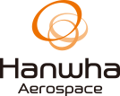
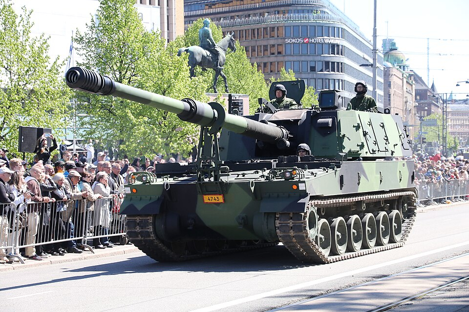

설립연도
1977년

K9 자주포, 레드백 장갑차, 천무 다연장로켓 같은 무기와 항공기 엔진, 누리호 엔진을 만드는 회사예요. 조선사 한화오션과 방산전자 회사 한화시스템도 거느리고 있어요. 폴란드 등 해외 수출이 크게 늘면서 2025년 매출 26.6조 원, 영업이익 3조 원을 넘었어요.
칸에 마우스를 올리거나 누르면 자세한 설명을 볼 수 있어요.

K9 자주포는 세계에서 가장 많이 팔린 자주포 중 하나로, 폴란드·호주·튀르키예 등 여러 나라에 수출됐어요. 호주에는 장갑차 레드백도 수출해요. 회사 이익의 대부분이 이 사업에서 나와요.
대표 예K9 자주포, 레드백 장갑차, 천무 다연장로켓
전투기·헬기용 엔진을 만들고 해외 엔진 회사의 부품을 생산해요. 한국형 발사체 누리호의 엔진도 이 회사가 만들었어요.
대표 예항공기 엔진·부품, 누리호 엔진
2023년 인수한 한화오션(옛 대우조선해양)이 군함, 잠수함, LNG 운반선을 만들어요. 매출로는 그룹에서 가장 큰 부분이에요.
대표 예한화오션: 잠수함, LNG 운반선
자회사 한화시스템이 레이더, 전투 지휘 체계 같은 방산전자 장비와 위성통신 사업을 해요.
대표 예한화시스템: 레이더, 위성
| 기간 | 매출 | 영업이익 | 순이익 |
|---|
사업마다 겨루는 상대가 달라요